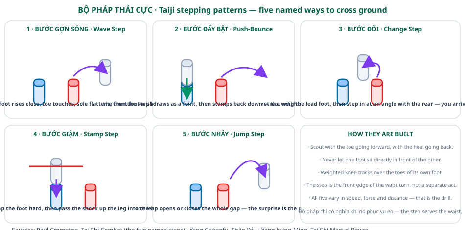
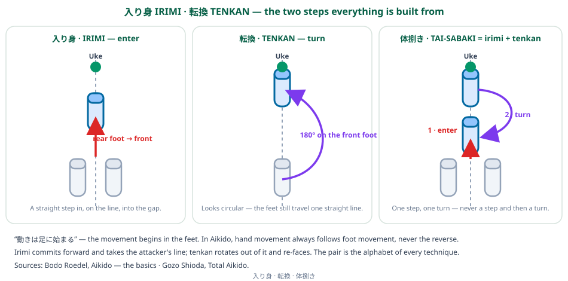

TFL Footwork Research Project
TFL — the Tennis Future Lab — opens a research shelf inside the Footwork section. This project reads the footwork of thirteen martial-arts books — seven from the Chinese internal arts (taijiquan, xingyiquan, baguazhang, Chen-style applications) and six from Japanese aikido — and writes out what each one actually says about where the feet go and why. The result is ten articles, each anchored on one book or one tight pair of books, each kept in a single language on a single page.

What TFL Is
Every book on this shelf was written for a fighting art, not for tennis. That is exactly why they are useful. A tennis player has roughly 1.2 seconds between an opponent’s contact and their own — and in that window the feet must decide stance, direction, distance and balance. Martial-arts footwork systems were built over centuries to solve a harder version of the same problem: arrive in the right place, at the right distance, on time, without losing the base you will need to deliver force.
The reading method here is deliberate. Each article takes the mechanics a book states — weight splits, foot angles, hip paths, step names, distance rules — and reports them plainly, in the book’s own vocabulary (romanised Japanese and pinyin Chinese, with Vietnamese where the Vietnamese tradition has its own term). Then it adds a short bridge: what the same mechanic looks like on a tennis court. Nothing is invented. Where a book gives no footwork instruction, the article says so.
Why Martial-Arts Footwork
Four ideas recur in these systems and make them worth mining:
- The weight map comes first. Before a single step, both traditions demand that you can tell your own weight apart — which foot is full, which is empty. Taiji calls this phân hư thực (虚實, full-and-empty) and calls getting it wrong “one of the worst errors”; aikido states it as a fixed ratio, 60 / 40, in its basic ready posture.
- The hips are the engine, the feet are the transmission. Taiji’s classic line — “the root is in the foot, it issues in the thigh, the waist is the master, it shows in the fingers” — has a direct aikido echo: foot movement always precedes hand movement, never the reverse.
- Distance is a number, not a feeling. Aikido fixes it at ma-ai: one tatami, about 1.8 m, the gap at which you are neither hittable nor unable to reach. Taiji fixes the bow stance at 70 / 30 and forbids 50 / 50.
- Every system has a small named alphabet of steps. Irimi and tenkan; wave step, push-bounce step, change step, stamp step, jump step; the six directions of bagua circle-walking. Tennis has its own alphabet — split step, first step, crossover, step-down, mogul move — and the two alphabets are more similar than either side admits.
The Two Families
The Chinese internal arts (articles 1–5) are the more explicit of the two about weight. Taijiquan publishes a numbered list of ten essential points, and the fourth — full-and-empty — governs every step. The bow stance, the waist as “master of the whole body”, the three-dimensional travel of the hips, the named stepping drills of combat taiji, and the circle-walking of baguazhang all come from this family.

Aikido (articles 6–10) is the more explicit about geometry. Its ready posture is a triangle with the rear foot as base and the forward hand as apex; its distance is measured in tatami; its entire footwork reduces to two movements — irimi (entering straight) and tenkan (turning out) — which together make tai-sabaki, body displacement. Aikido also teaches footwork through weapons, and those lessons transfer to bare-hand movement unchanged.

The Ten Articles
The Common Thread: Tennis, Taiji and the Martial Arts — the whole project in one page. It traces the single line that runs through all ten articles — dynamic balance, flexibility and recovery — with eleven source plates lifted from the books and a side-by-side comparison against Tennis Without Talent. Read this first.
The Split Step: Load, Unload, Redirect — the one move every professional makes and almost nobody teaches as one movement. Read it as a single martial-arts movement with three jobs: load and unload the legs like a spring, unweight the foot that must step, and redirect while staying in dynamic balance.
Chinese internal arts
- >The Root in the Foot — Yang Chengfu’s Ten Essential Points: where force is said to begin, and why the waist is called the master.
- >Full and Empty — weight distribution as the first footwork skill, the double-weighting error, and Zheng Manqing’s cross-balance.
- >Named Stepping Patterns — the five combat-taiji steps: wave, push-bounce, change, stamp, jump.
- >Footwork on the Martial Side — root, pivot, knee tracking, and the deliberate sacrifice of balance.
- >Beyond Taiji — xingyi’s standing, bagua’s circle-walking, and Chen-style’s explosive stamping steps.
Aikido
- >Kamae and Hanmi — the ready stance, its triangular base, and the two facing postures.
- >Irimi and Tenkan — the two steps from which every aikido technique is assembled.
- >Tai Sabaki — turning, weight-shift, and the S- and V-shaped paths of the hips.
- >Ma-ai and De-ai — distance and timing, both of them decided by the feet.
- >Weapons Footwork — what the sword and staff teach the feet.
How to Read These Pages
- One language per page. Each article exists twice: an English page here, a Vietnamese page under
/vi/. Use the globe button in the header to switch. No page mixes the two languages. - Every article names its source book and links to the full Vietnamese reader on the TaichiNOW library, where the original text, figures and the English original can be checked directly.
- Terminology is kept in the original. Romanised Japanese (irimi, hanmi, ma-ai) and pinyin or Sino-Vietnamese Chinese (hư thực, yêu, bộ pháp) are used as the books use them, with a plain-English gloss on first appearance.
- Diagrams are shared. The four diagrams on this shelf are language-neutral: they carry the technical terms, not prose.
Sources
The thirteen books read for this project, all in the TaichiNOW Vietnamese library:
Chinese internal arts
- Thập Yếu — Dương Trừng Phủ (Yang Chengfu, Ten Essential Points of Taijiquan)
- Thái Cực Quyền Vũ Lực (Yang Jwing-Ming, Tai Chi Martial Power)
- Bằng Kình Trong Thái Cực Quyền (Peng Jin in Tai Chi)
- Thái Cực Quyền: Bản Chất Thực Chiến (Michael Babin, T’ai Chi Ch’uan: The Martial Side)
- Thực Chiến Thái Cực Quyền (Paul Crompton, Tai Chi Combat)
- Kỹ Thuật Thực Chiến Thái Cực, Hình Ý & Bát Quái (Combat Techniques of Taiji, Xingyi and Bagua)
- Trần Thức Thái Cực Quyền Kỹ Kích Pháp (Mã Hồng, Chen-style combat applications)
Aikido
- Aikido — Những Điều Cơ Bản (Bodo Roedel, Aikido — the basics)
- Total Aikido (Gozo Shioda)
- Advanced Aikido (Phong Thong Dang & Lynn Seiser)
- Takemusu Aikido, Tập 1 (Morihiro Saito)
- Aikido — Võ Đạo Của Sự Chấp Nhận (Nishio Shōji, Yurusu Budo)
- Traditional Aikido, Tập 2 — Kiếm, Gậy và Thân thuật (Morihiro Saito)
All quotations in this shelf are translated from the Vietnamese readers of these editions; page and section references follow those readers. Diagrams are original work made for this project. Published 13 October 2026.